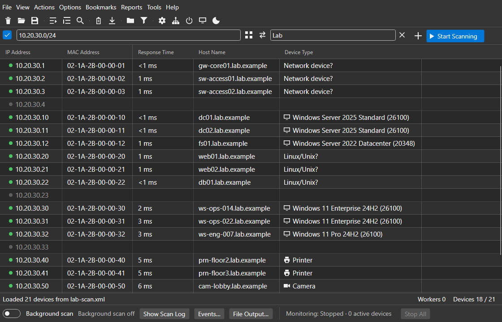
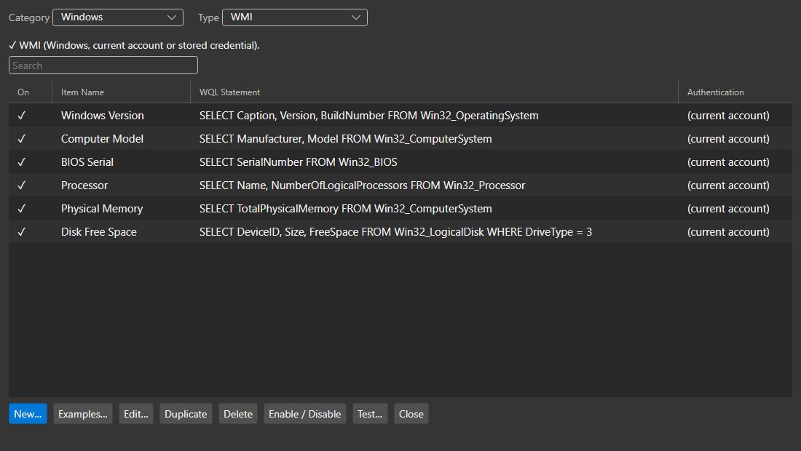
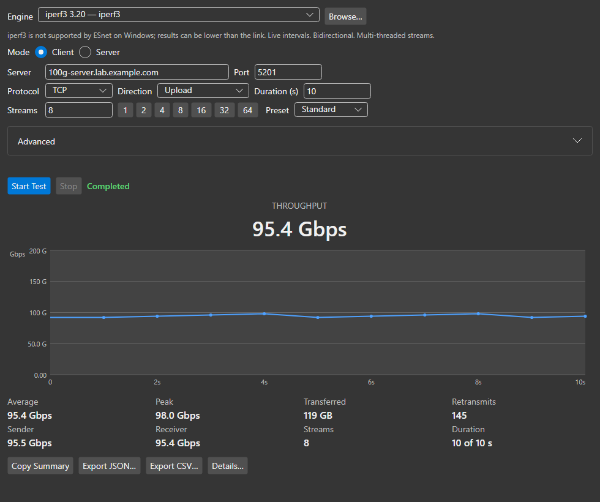
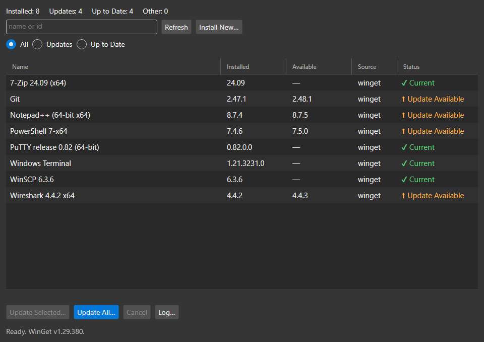
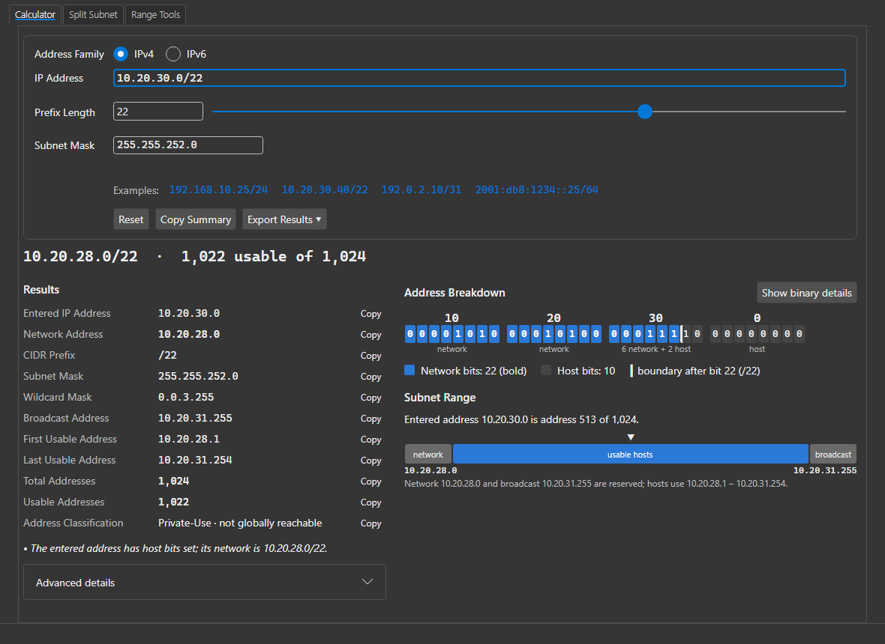
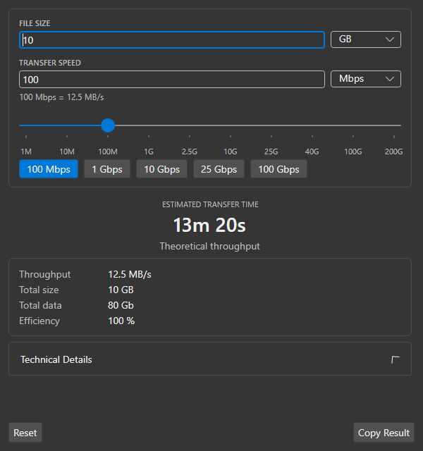

Scanning
IPv4 and IPv6 ranges, CIDR blocks and lists, with results you can sort, filter and compare.
- ICMP, ARP, TCP
- Open ports
- Host names
- MAC and vendor
IPMaster
Scan ranges, identify devices, query hosts, watch latency and run network diagnostics from one portable desktop app with a built-in command line.

Features
Answers from the wire, the host and the service, in one window.
IPv4 and IPv6 ranges, CIDR blocks and lists, with results you can sort, filter and compare.
Device types with the evidence behind them, plus the services that announce themselves.
Protocol testers that show what the server actually said.
Live latency, loss and jitter, background scans and a device history that notices change.
Remote queries as scan columns, and the Windows tools you open every week.
The calculators and outputs that turn a scan into a report or a script.
Slash switches select the command line. Results go to stdout or a file, diagnostics to stderr, and the exit code tells your script what happened.
# scan a /24 and save the results
IPMaster --cli /range:192.168.1.0/24 /auto:results.csv
# all switches
IPMaster --cli /helpNot yet verified against real targets: SNMPv3, SSH, remote PowerShell, Nmap and Python queries; UPnP, mDNS, WSD and ONVIF discovery; duplicate-IP detection. They are implemented and covered by tests, but have not been run against real equipment, so they are not listed above.
Screenshots
Rendered from IPMaster with sample data, dark theme, actual pixel size.





Download
Packages are attached to each GitHub release, with a SHA256SUMS.txt file to check them.
…-win-x64-portable.zip Self-contained: unzip and run, no .NET needed.…-win-x64.zip Smaller; needs the .NET 10 runtime.…-setup-framework-dependent.msi All users, Start Menu entry, silent install and upgrades. Needs .NET 10.…-linux-x64.tar.gz and …-linux-arm64.tar.gz, portable or framework-dependent.
The command line has been run on Linux x64. The desktop app on Linux is not validated yet.
Linux packages…-osx-arm64.tar.gz and …-osx-x64.tar.gz with an unsigned IPMaster.app.
Built but not validated on macOS yet.
macOS packagesIPMaster is licensed under the GNU GPL version 3 only. Releases built from the
licensed source include LICENSE, THIRD-PARTY-NOTICES.md and SOURCE.txt (the source
commit). v0.8.0 and v0.9.0 were published before the licence was added.
Windows-only features (WMI, registry, Wi-Fi analysis, WinGet, Group Policy, KMS) report "unsupported" with a reason on other systems. Packet-capture features need Npcap on Windows.